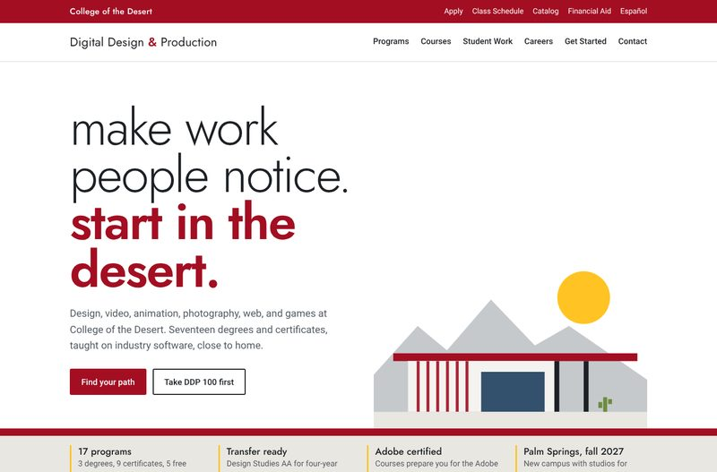
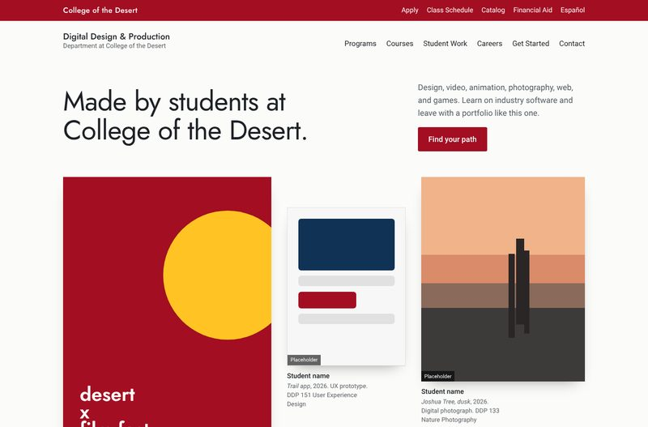
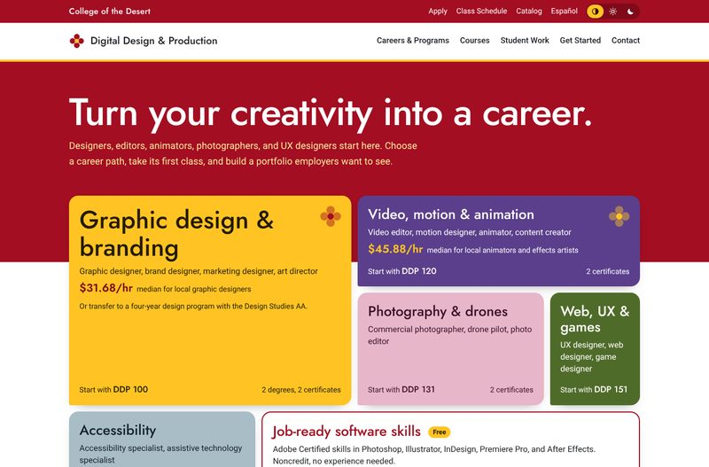

Three homepage directions
Each direction uses the same content, COD's Roadrunner red and gold, and the same accessibility standard. They differ in what the page leads with. Pick one, or name the parts you like from each, and the rest of the site will be built in that style.
-

A. Desert Modern
Leads with place. Palm Springs mid-century architecture: a red roofline, shade slats, and long horizontal planes.
- Best for
- A calm, confident identity that feels local and ties to the new Palm Springs campus.
- Needs
- Nothing new. Works today without student artwork.
-

B. Gallery Wall
Leads with student work. The homepage is a hang of pieces, each with a museum wall label: student, title, medium, and course.
- Best for
- Showing what students make, so prospective students can picture their own portfolio.
- Needs
- 10 to 20 pieces of real student work with signed releases. The shapes shown are placeholders.
-

C. Creative Careers (selected)
Leads with careers on a Roadrunner-red band, with red and gold carrying the brand throughout. Each of the six career paths keeps its own desert-bloom color (gold, chia purple, desert-willow pink, cholla green, smoke-tree blue), which follows it onto its own page. Includes a light, dark, and match-my-device switch.
- Best for
- Students who want to know where the work leads. It is the most direct route from "I'm creative" to a job title and a first class.
- Needs
- Nothing new. Chosen direction for the full build.